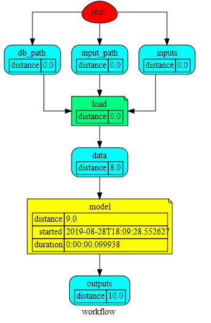
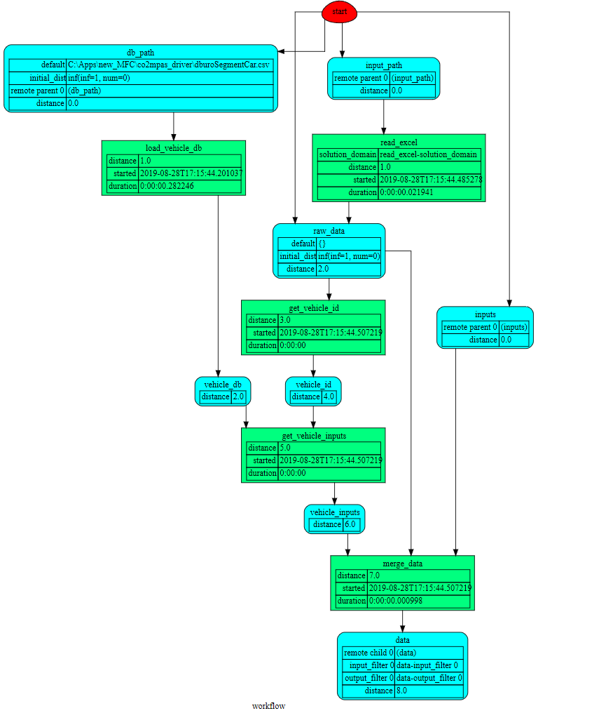
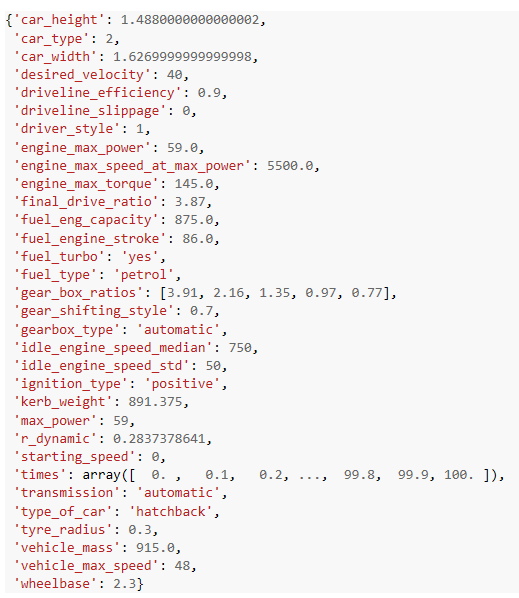
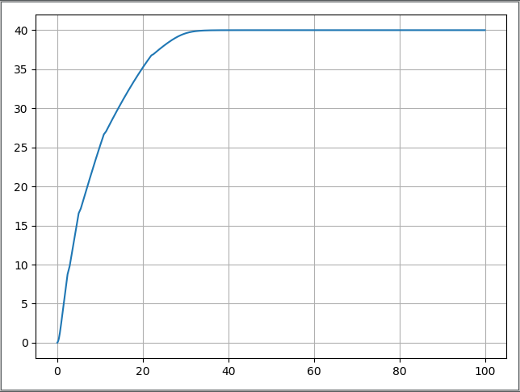
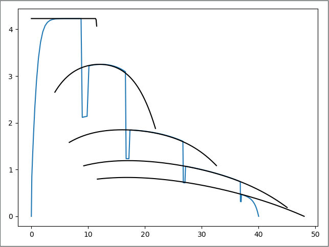
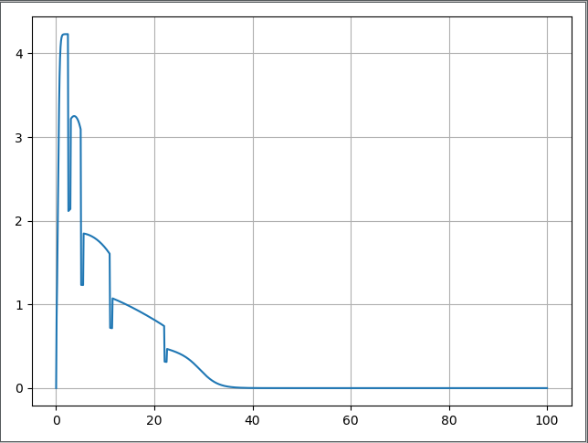

Usage
In this example we will use co2mpas_driver model in order to extract the drivers acceleration behavior as approaching the target speed.
Setup
First, set up python, numpy, matplotlib.
Set up python environment: numpy for numerical routines, and matplotlib for plotting
>>> import numpy as np >>> import matplotlib.pyplot as plt
co2mpas_driver must be imported as a dispatcher (dsp). The dsp contains functions to process vehicle data and run the com2pas_driver model. Also is necessary to import schedula for selecting and executing functions from the co2mpas_driver. For more information on how to use schedula: https://pypi.org/project/schedula/
>>> from co2mpas_driver import dsp >>> import schedula as sh
Load data
Load vehicle data for a specific vehicle from vehicles database
>>> db_path = 'EuroSegmentCar.csv'
Load user input parameters from an excel file
>>> input_path = 'sample.xlsx'
Sample time series
>>> sim_step = 0.1 #The simulation step in seconds >>> duration = 100 #Duration of the simulation in seconds >>> times = np.arange(0, duration + sim_step, sim_step)
Load user input parameters directly writing in your sample script
>>> inputs = { 'vehicle_id': 35135, # A sample car id from the database 'inputs': {'gear_shifting_style': 0.7, #The gear shifting style as described in the TRR paper 'starting_speed': 0, 'desired_velocity': 40, 'driver_style': 1}, # gear shifting can take value # from 0(timid driver) to 1(aggressive driver) 'time_series': {'times': times} }
Dispatcher
Dispatcher will select and execute the proper functions for the given inputs and the requested outputs
>>> core = dsp(dict(db_path=db_path, input_path=input_path, inputs=inputs), outputs=['outputs'], shrink=True)
Plot workflow of the core model from the dispatcher
>>> core.plot()
This will plot the workflow of the core model on an internet browser (see below). You can click all the rectangular boxes to see in detail the sub-models like load, model, write and plot.
The Load module
Merged vehicle data for the vehicle_id used above
Load outputs of dispatcher and select the chosen dictionary key (outputs) from the given dictionary.
>>> outputs = sh.selector(['outputs'], sh.selector(['outputs'], core))
Select the desired output
>>> output = sh.selector(['Curves', 'poly_spline', 'Start', 'Stop', 'gs', 'discrete_acceleration_curves', 'velocities', 'accelerations', 'transmission'], outputs['outputs'])
The final acceleration curves, the engine acceleration potential curves (poly_spline), start, stop, gear shift, discrete acceleration curves, velocities, accelerations and transmission, before calculating the resistances and the limitation due to max possible acceleration (friction).
>>> curves, poly_spline, start, stop, gs, discrete_acceleration_curves, velocities, accelerations, transmission = output['Curves'], output['poly_spline'], output['Start'], output['Stop'], output['gs'], output['discrete_acceleration_curves'], output['velocities'], output['accelerations'], output['transmission']
{kind=link}
{kind=link}
{kind=link}
Plot
>>> plt.figure('Time-Speed')
>>> plt.plot(times, velocities)
>>> plt.grid()
>>> plt.figure('Speed-Acceleration')
>>> plt.plot(velocities, accelerations)
>>> plt.grid()
>>> plt.figure('Acceleration-Time')
>>> plt.plot(times, accelerations)
>>> plt.grid()
>>> plt.figure('Speed-Acceleration')
>>> for curve in discrete_acceleration_curves:
sp_bins = list(curve['x'])
acceleration = list(curve['y'])
plt.plot(sp_bins, acceleration, 'k')
>>> plt.show()
Results
{kind=link}
Figure 1. Speed(m/s) versus time(s) graph over the desired speed range.
Acceleration(m/s*2) versus speed(m/s) graph
{kind=link}
- Figure 2. Acceleration per gear, the gear-shifting points and final acceleration potential of our selected
vehicle over the desired speed range
Acceleration(m/s*2) versus speed graph(m/s)
{kind=link}
Figure 3. The final acceleration potential of our selected vehicle over the desired speed range.